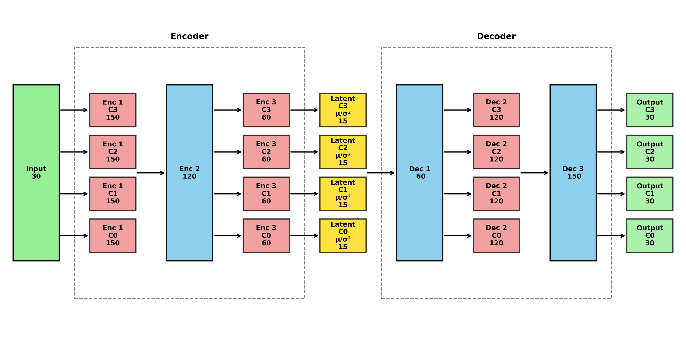

Installing package
Install devtools or remotes if not already installed:
install.packages("remotes")
# or
install.packages("devtools")The rCISSVAE package can be installed with:
remotes::install_github("CISS-VAE/rCISS-VAE")
# or
devtools::install_github("CISS-VAE/rCISS-VAE")Ensuring correct virtual environment for reticulate
This package uses reticulate to interface with the
python version of the package cissvae. Therefore, it is
necessary to make sure that you have a venv or conda environment set up
that has the cissvae package installed. If you are
comfortable creating an environment and installing the package, great!
Then all you need to do is tell reticulate where to point.
For Venv
reticulate::use_virtualenv("./.venv", required = TRUE)For conda
reticulate::use_condaenv("myenv", required = TRUE)Virtual environment helper function
If you do not want to manually create the virtual environment, you
can use the helper function create_cissvae_env() to create
a virtual environment (venv) in your current working directory.
create_cissvae_env(
envname = "cissvae_environment", ## name of environment
path = NULL, ## add path to wherever you want virtual environment to be
install_python = FALSE, ## set to TRUE if you want create_cisssvae_env to install python for you
python_version = "3.10" ## set to whatever version you want >=3.10. Python 3.10 or 3.11 recommended
)Note: If you run into issues with create_cissvae_env(), you can create the virtual environment manually by following this tutorial
Once the environment is created, activate it using:
reticulate::use_virtualenv("./cissvae_environment", required = TRUE)
# If you used a non-default environment name then,
# reticulate::use_virtualenv("./your_environment_name", required = TRUE)(optional) Installing other python packages
If you want to install other python packages (eg seaborn) to your
environment, you can use reticulate::virtualenv_install().
Quickstart
Once reticulate is pointing to the virtual environment containing the
ciss_vae python package, you can either use the
run_cissvae function or the autotune_cissvae
function.
If you know what hyperparameters you want to use for the model, use
the run_cissvae function.
Run CISSVAE with Training History and Progress Tracking
Your data should be in a DataFrame format with optional
index column. If you already have clusters you want to use, they should
be in a separate vector from the dataframe. If you do not have clusters
to begin with, set ‘clusters’ in run_cissvae() to NULL.
Example Dataset
With the rCISSVAE package comes a sample dataset with predetermined clusters. We will use this for the sake of the tutorial.
The dataset, df_missing contains an index column as well
as the following:
| Characteristic | N = 8,000 |
|---|---|
| Age | 9.99 (8.73, 11.44) |
| Salary | 5.70 (5.34, 6.17) |
| ZipCode10001 | 2,628 (33%) |
| ZipCode20002 | 2,697 (34%) |
| ZipCode30003 | 2,675 (33%) |
| Y11 | 0 (-11, 7) |
| Unknown | 3,122 |
| Y12 | 49 (-22, 58) |
| Unknown | 3,118 |
| Y13 | 72 (-17, 95) |
| Unknown | 3,110 |
| Y14 | 69 (-12, 119) |
| Unknown | 3,129 |
| Y15 | 72 (-12, 134) |
| Unknown | 3,141 |
| Y21 | -9 (-22, 0) |
| Unknown | 3,135 |
| Y22 | 47 (-35, 58) |
| Unknown | 3,094 |
| Y23 | 74 (-29, 100) |
| Unknown | 3,098 |
| Y24 | 71 (-22, 128) |
| Unknown | 3,146 |
| Y25 | 73 (-22, 145) |
| Unknown | 3,106 |
| Y31 | 0 (-14, 11) |
| Unknown | 2,067 |
| Y32 | 59 (-17, 69) |
| Unknown | 2,056 |
| Y33 | 81 (-13, 101) |
| Unknown | 2,013 |
| Y34 | 79 (-6, 124) |
| Unknown | 2,051 |
| Y35 | 81 (-6, 139) |
| Unknown | 2,054 |
| Y41 | 0 (-6, 5) |
| Unknown | 2,032 |
| Y42 | 27 (-8, 32) |
| Unknown | 2,022 |
| Y43 | 37 (-5, 46) |
| Unknown | 2,013 |
| Y44 | 36 (-3, 56) |
| Unknown | 2,023 |
| Y45 | 37 (-3, 63) |
| Unknown | 2,086 |
| Y51 | 1.8 (-3.6, 5.8) |
| Unknown | 2,077 |
| Y52 | 25 (-5, 29) |
| Unknown | 2,034 |
| Y53 | 34 (-3, 41) |
| Unknown | 1,976 |
| Y54 | 33 (-1, 50) |
| Unknown | 2,047 |
| Y55 | 34 (-1, 56) |
| Unknown | 2,050 |
Age, Salary and ZipCode columns represent demographic data with no missingness and columns Y1t-Y5t represent biomarker data obtained at different timepoints t.
Explanation of run_cissvae() Parameters
The run_cissvae() function is a comprehensive wrapper
for all basic steps in running the CISS-VAE model, including dataset
preparation, optional clustering, and running the imputation model.
Click for a detailed explanation of all parameters
Dataset Parameters - data: A DataFrame
containing the dataset to be imputed. Contains optional index
column.
- index_col: Name of index column to be preserved when imputing. Index
column will not have any values held out for validation
- val_proportion: Fraction of non-missing entries to hold out for
validation during training. To use different proportions for each
cluster, pass a vector.
- replacement_value: Fill value for masked entries during training.
Default is 0.0.
- columns_ignore: Character or integer vector containing columns to
exclude when selecting validation data. These columns will be used
during training. - print_dataset: Set TRUE to print dataset
summary information during processing.
Clustering Parameters (optional)
- clusters: Vector of one cluster label per row of ‘data’ dataframe. If
NULL, will automatically determine clusters using HDBSCAN
or KMeans.
- n_clusters: Number of clusters for KMeans clustering when ‘clusters’
is NULL. If n_clusters is NULL, will use HDBSCAN
for clustering.
- cluster_selection_epsilon: Epsilon parameter for HDBSCAN
clustering when automatic clustering is used.
- missingness_proportion_matrix: Optional pre-computed missingness
proportion matrix for feature-based clustering. If provided, clustering
will be based on these proportions instead of direct 0/1 missingness
pattern.
- scale_features: Set TRUE to scale features when using
missingness proportion matrix clustering.
Model Parameters
- hidden_dims: A vector containing the sizes of hidden layers in
encoder/decoder. The length of this vector determines number of hidden
layers.
- latent_dim: The dimension of the latent space representation.
- layer_order_enc: A vector stating the pattern of ‘shared’ and
‘unshared’ layers for the encoder. The length must match
length(hidden_dims). Default c(‘unshared’, ‘unshared’,
‘unshared’).
- layer_order_dec: A vector stating the pattern of ‘shared’ and
‘unshared’ layers for the decoder. The length must match
length(hidden_dims). Default c(‘shared’, ‘shared’,
‘shared’).
- latent_shared: Whether latent space weights are shared across
clusters. If FALSE, will have separate latent weights for each
cluster.
- ouput_shared: If FALSE, will have separate output layer for each
cluster.
- batch_size: Integer. Mini-batch size for training. Larger values may
improve training stability but require more memory.
- return_model: If TRUE, returns the model object. Set TRUE to use
plot_vae_architecture() after running.
- epochs: Number of epochs for initial training phase
- initial_lr: Initial learning rate for optimizer.
- decay_factor: Exponential decay factor for learning rate.
- beta: Weight for KL divergence term in VAE loss function.
- device: Device specification for computation (“cpu” or “cuda”). If
NULL, automatically selects best available device.
- max-loops: Max number of impute-refit loops to perform.
- patience: Training stops if validation loss doesn’t improve for this
many consecutive impute-refit loops.
- epochs-per-loop: Number of epochs per refit loop. If null, uses same
value as epochs. Default NULL.
- decay_factor_refit: Decay factor for refit loops. If NULL, uses same
value as decay_factor. Default NULL.
- beta_refit: KL weight for refit loops. If NULL, uses same value as
beta. Default NULL.
Optional Parameters
- verbose: Set TRUE to print MSE for each loop as it runs.
- return_silhouettes: If clusters not given, will return silhouette
scores for automatic clustering. - return_history: If TRUE,
returns training history as data.frame. Good for checking for
overfitting. - return_dataset: If TRUE, returns
ClusterDataset object.
Running the imputation
To run the imputation model, first load your data.
suppressPackageStartupMessages({
library(tidyverse)
library(reticulate)
library(rCISSVAE)
})
## Set correct virtualenv
reticulate::use_virtualenv("./cissvae_environment", required = TRUE)
## Load the data
data(df_missing)
data(clusters) ## actual cluster labels in clusters$clusters (other column is index)
cluster_summary(df_missing, clusters$clusters, index_col = "index") %>% kable()
## Run the imputation model.
dat = run_cissvae(
data = df_missing,
index_col = "index",
val_proportion = 0.1, ## pass a vector for different proportions by cluster
columns_ignore = c("Age", "Salary", "ZipCode10001", "ZipCode20002", "ZipCode30003"), ## If there are columns in addition to the index you want to ignore when selecting validation set, list them here. In this case, we ignore the 'demographic' columns because we do not want to remove data from them for validation purposes.
clusters = clusters$clusters, ## we have precomputed cluster labels so we pass them here
epochs = 500,
return_silhouettes = FALSE,
return_history = TRUE, # Get detailed training history
verbose = FALSE,
return_model = TRUE, ## Allows for plotting model schematic
device = "cpu", # Explicit device selection
layer_order_enc = c("unshared", "shared", "unshared"),
layer_order_dec = c("shared", "unshared", "shared")
)
## Retrieve results
imputed_df <- dat$imputed
silhouette <- dat$silhouettes
training_history <- dat$history # Detailed training progress
## Plot training progress
if (!is.null(training_history)) {
plot(training_history$epoch, training_history$loss,
type = "l", main = "Training Loss Over Time",
xlab = "Epoch", ylab = "Loss")
}
plot_vae_architecture(model = dat$model, save_path = "test_plot_arch.png")#>
#> Attaching package: 'kableExtra'
#> The following object is masked from 'package:dplyr':
#>
#> group_rows
#> Processing continuous variables: Age, Salary, ZipCode10001, ZipCode20002, ZipCode30003, Y11, Y12, Y13, Y14, Y15, Y21, Y22, Y23, Y24, Y25, Y31, Y32, Y33, Y34, Y35, Y41, Y42, Y43, Y44, Y45, Y51, Y52, Y53, Y54, Y55
#> Processing categorical variables:| Variable | Overall | Cluster 0 | Cluster 1 | Cluster 2 | Cluster 3 |
|---|---|---|---|---|---|
| N | 8000 | 2000 | 2000 | 2000 | 2000 |
| Age | 10.2 (2.08); 9.99 [8.73, 11.44] | 10.1 (2.04); 9.94 [8.72, 11.34] | 10.19 (2.08); 10 [8.68, 11.42] | 10.21 (2.14); 9.94 [8.65, 11.53] | 10.29 (2.06); 10.09 [8.83, 11.46] |
| Salary | 5.82 (0.61); 5.7 [5.34, 6.17] | 5.81 (0.61); 5.69 [5.34, 6.16] | 5.83 (0.62); 5.69 [5.34, 6.16] | 5.83 (0.61); 5.71 [5.33, 6.2] | 5.81 (0.6); 5.71 [5.33, 6.15] |
| ZipCode10001 | 0.33 (0.47); 0 [0, 1] | 0.32 (0.47); 0 [0, 1] | 0.34 (0.47); 0 [0, 1] | 0.33 (0.47); 0 [0, 1] | 0.32 (0.47); 0 [0, 1] |
| ZipCode20002 | 0.34 (0.47); 0 [0, 1] | 0.35 (0.48); 0 [0, 1] | 0.33 (0.47); 0 [0, 1] | 0.33 (0.47); 0 [0, 1] | 0.34 (0.47); 0 [0, 1] |
| ZipCode30003 | 0.33 (0.47); 0 [0, 1] | 0.33 (0.47); 0 [0, 1] | 0.34 (0.47); 0 [0, 1] | 0.34 (0.47); 0 [0, 1] | 0.33 (0.47); 0 [0, 1] |
| Y11 | -2.82 (13.25); -0.41 [-11.13, 7.24], 3122 (39%) missing | -21.2 (10.08); -20.61 [-27.35, -14.34], 1281 (64%) missing | -16.04 (8.89); -14.82 [-21.5, -9.96], 1288 (64.4%) missing | 8.39 (5.39); 8.39 [4.87, 11.97] | -2.68 (5.86); -2.33 [-6.35, 1.43], 553 (27.6%) missing |
| Y12 | 22.23 (42.54); 48.6 [-22.37, 58.35], 3118 (39%) missing | 68.9 (11.29); 67.55 [60.96, 75.67], 1264 (63.2%) missing | -26.43 (9.3); -25.95 [-32.64, -19.82], 1283 (64.2%) missing | 55.35 (6.18); 55.11 [50.82, 59.29] | -23.73 (7.87); -22.99 [-28.45, -18.19], 571 (28.6%) missing |
| Y13 | 42.75 (57.09); 72.43 [-17.25, 94.71], 3110 (38.9%) missing | 77.28 (12.34); 76.4 [68.65, 84.87], 1289 (64.4%) missing | -24.92 (8.71); -24.39 [-30.29, -18.89], 1264 (63.2%) missing | 98.14 (11.87); 97.13 [89.53, 105.64] | -16.52 (6.63); -16.05 [-20.32, -11.85], 557 (27.9%) missing |
| Y14 | 55.55 (66.05); 69.08 [-11.98, 118.98], 3129 (39.1%) missing | 73.32 (11.53); 72.74 [65.01, 79.92], 1300 (65%) missing | -20.78 (7.8); -20.36 [-25.74, -15.03], 1283 (64.2%) missing | 125.13 (16.23); 123.49 [113.3, 135.39] | -11.08 (5.61); -10.57 [-14.53, -7.17], 546 (27.3%) missing |
| Y15 | 63.77 (72.61); 72.28 [-11.56, 134.28], 3141 (39.3%) missing | 75.96 (11.74); 74.87 [67.97, 82.98], 1273 (63.6%) missing | -11.93 (6.41); -11.5 [-16, -7.6], 1293 (64.7%) missing | 141.25 (19.01); 138.89 [127.54, 153.1] | -13.64 (6.4); -13.08 [-17.33, -9.05], 575 (28.8%) missing |
| Y21 | -12.23 (15.68); -9.48 [-22.1, -0.1], 3135 (39.2%) missing | -33.45 (12.23); -32.63 [-40.76, -25.16], 1266 (63.3%) missing | -27.52 (10.59); -26.59 [-34.29, -19.8], 1292 (64.6%) missing | 0.9 (6.62); 1.02 [-3.19, 5.41] | -12.14 (7.39); -11.61 [-16.67, -7.02], 577 (28.9%) missing |
| Y22 | 16.04 (48.68); 47.36 [-34.6, 57.56], 3094 (38.7%) missing | 69.27 (11.68); 67.96 [60.99, 76.57], 1266 (63.3%) missing | -39.51 (11.64); -38.76 [-46.74, -31.3], 1276 (63.8%) missing | 54.43 (6.21); 54.24 [50.14, 58.44] | -36.19 (9.78); -35.36 [-42.22, -29.16], 552 (27.6%) missing |
| Y23 | 39.92 (65.7); 74.15 [-29.16, 99.94], 3098 (38.7%) missing | 78.76 (13.09); 77.34 [69.45, 86.91], 1273 (63.6%) missing | -38.1 (11); -37.07 [-44.92, -30.52], 1275 (63.8%) missing | 103.87 (12.61); 103.02 [94.73, 111.7] | -28.73 (8.52); -28.05 [-33.89, -22.87], 550 (27.5%) missing |
| Y24 | 55.14 (75.63); 71.14 [-22.44, 128.49], 3146 (39.3%) missing | 75.32 (12.36); 74.81 [66.48, 82.65], 1302 (65.1%) missing | -32.22 (9.53); -31.83 [-37.98, -25.66], 1287 (64.3%) missing | 134.69 (17.51); 133.04 [122.14, 145.61] | -21.7 (7.16); -21.21 [-25.84, -16.54], 557 (27.9%) missing |
| Y25 | 63.86 (83.02); 73.21 [-21.76, 145.23], 3106 (38.8%) missing | 77.63 (12.52); 76.27 [68.98, 85.19], 1257 (62.9%) missing | -22.23 (7.81); -21.39 [-27.19, -16.83], 1294 (64.7%) missing | 153.08 (20.72); 150.83 [138.24, 166.3] | -24.63 (8.12); -23.93 [-29.28, -18.78], 555 (27.8%) missing |
| Y31 | -2.38 (15.47); -0.44 [-14.24, 10.52], 2067 (25.8%) missing | -18.28 (10.37); -17.72 [-24.49, -11.15], 192 (9.6%) missing | -13.16 (9.15); -12.14 [-18.64, -7.15], 1285 (64.2%) missing | 13.4 (5.48); 13.3 [9.89, 16.97] | 1.07 (6.02); 1.49 [-2.59, 5.04], 590 (29.5%) missing |
| Y32 | 35.48 (44.33); 59.39 [-16.84, 69.12], 2056 (25.7%) missing | 74.39 (10.92); 73.43 [66.77, 80.86], 206 (10.3%) missing | -24.27 (9.9); -23.74 [-30.45, -17.06], 1287 (64.3%) missing | 62.21 (6.63); 61.73 [57.57, 66.41] | -20.65 (8); -19.79 [-25.4, -15.04], 563 (28.1%) missing |
| Y33 | 54.8 (56.83); 80.92 [-12.68, 101.36], 2013 (25.2%) missing | 83.77 (12.9); 82.77 [74.7, 91.41], 203 (10.2%) missing | -23.25 (9.53); -22.31 [-29.3, -16.44], 1267 (63.4%) missing | 107.81 (12.65); 106.95 [98.54, 115.69] | -14.43 (7.08); -14.08 [-18.51, -9.7], 543 (27.1%) missing |
| Y34 | 66.6 (63.23); 79.15 [-6.08, 124.15], 2051 (25.6%) missing | 81.4 (12.51); 80.34 [72.73, 88.83], 195 (9.8%) missing | -16.58 (7.73); -16.22 [-21.35, -11.12], 1275 (63.8%) missing | 135.95 (17.14); 134.48 [123.74, 146.48] | -7.48 (5.83); -7.11 [-10.91, -3.41], 581 (29%) missing |
| Y35 | 73.13 (69.46); 80.88 [-5.82, 138.75], 2054 (25.7%) missing | 83.22 (12.63); 82.29 [74.42, 91.01], 204 (10.2%) missing | -7.56 (6.11); -7.22 [-11.37, -3.47], 1285 (64.2%) missing | 152.77 (20); 150.77 [138.32, 165.12] | -10.27 (6.66); -9.89 [-14.35, -5.61], 565 (28.2%) missing |
| Y41 | -1.03 (6.75); -0.06 [-6.42, 4.78], 2032 (25.4%) missing | -8.43 (4.11); -8.17 [-10.89, -5.63], 184 (9.2%) missing | -5.47 (3.4); -5.19 [-7.68, -3.05], 1279 (64%) missing | 6 (2.08); 6.04 [4.59, 7.42] | 0.79 (2.29); 0.83 [-0.72, 2.35], 569 (28.4%) missing |
| Y42 | 16.62 (20.72); 27.03 [-7.99, 32.32], 2022 (25.3%) missing | 35.33 (6.07); 34.86 [31.08, 38.96], 199 (9.9%) missing | -10.85 (3.89); -10.51 [-13.34, -8.02], 1282 (64.1%) missing | 28.63 (3.53); 28.38 [26.11, 30.84] | -9.43 (3.15); -9.1 [-11.36, -7.25], 541 (27%) missing |
| Y43 | 25.38 (25.81); 37.1 [-5.29, 46.39], 2013 (25.2%) missing | 38.94 (6.89); 38.4 [34.22, 42.96], 217 (10.8%) missing | -9.74 (3.42); -9.56 [-12.03, -7.25], 1242 (62.1%) missing | 49.16 (6.44); 48.53 [44.48, 53.16] | -5.82 (2.54); -5.65 [-7.56, -3.91], 554 (27.7%) missing |
| Y44 | 30.33 (29.1); 35.89 [-2.97, 56.24], 2023 (25.3%) missing | 37.26 (6.6); 36.58 [32.56, 41.32], 186 (9.3%) missing | -8.17 (3.15); -8.05 [-10.24, -5.94], 1280 (64%) missing | 62.18 (8.63); 61.05 [55.99, 67.7] | -3.33 (2.17); -3.25 [-4.69, -1.83], 557 (27.9%) missing |
| Y45 | 33.81 (31.9); 37.45 [-2.93, 63.2], 2086 (26.1%) missing | 38.57 (6.75); 37.9 [34.02, 42.57], 204 (10.2%) missing | -3.85 (2.5); -3.74 [-5.46, -2.19], 1305 (65.2%) missing | 69.91 (9.98); 68.68 [62.6, 76.11] | -4.52 (2.45); -4.4 [-6.1, -2.82], 577 (28.9%) missing |
| Y51 | 0.95 (5.79); 1.8 [-3.64, 5.83], 2077 (26%) missing | -5.38 (3.58); -5.17 [-7.57, -2.96], 222 (11.1%) missing | -2.94 (3.05); -2.64 [-4.83, -0.93], 1279 (64%) missing | 6.88 (1.91); 6.81 [5.59, 8.08] | 2.48 (2.04); 2.58 [1.22, 3.88], 576 (28.8%) missing |
| Y52 | 16 (17.75); 24.85 [-5.06, 29.46], 2034 (25.4%) missing | 32.07 (5.19); 31.6 [28.56, 35.22], 209 (10.4%) missing | -7.54 (3.37); -7.21 [-9.72, -5.21], 1283 (64.2%) missing | 26.28 (3.07); 26.07 [24.08, 28.24] | -6.26 (2.73); -6.1 [-7.92, -4.34], 542 (27.1%) missing |
| Y53 | 23.58 (22.01); 33.75 [-2.69, 41.4], 1976 (24.7%) missing | 35.23 (5.83); 34.78 [31.24, 38.69], 184 (9.2%) missing | -6.5 (3.01); -6.4 [-8.34, -4.35], 1243 (62.1%) missing | 43.78 (5.51); 43.17 [39.8, 47.14] | -3.13 (2.22); -3.03 [-4.44, -1.72], 549 (27.4%) missing |
| Y54 | 27.66 (24.95); 32.59 [-0.7, 49.97], 2047 (25.6%) missing | 33.71 (5.52); 33.14 [30.02, 36.9], 217 (10.8%) missing | -5.23 (2.74); -5.14 [-6.81, -3.45], 1281 (64%) missing | 54.94 (7.4); 54 [49.67, 59.44] | -1.08 (1.92); -0.92 [-2.34, 0.24], 549 (27.4%) missing |
| Y55 | 30.49 (27.35); 33.72 [-0.86, 55.61], 2050 (25.6%) missing | 34.83 (5.69); 34.24 [30.9, 38.23], 207 (10.3%) missing | -1.63 (2.14); -1.53 [-2.94, -0.28], 1292 (64.6%) missing | 61.59 (8.52); 60.68 [55.39, 66.94] | -2.09 (2.15); -1.94 [-3.42, -0.68], 551 (27.6%) missing |
#> Cluster dataset:
#> ClusterDataset(n_samples=8000, n_features=30, n_clusters=4)
#> • Original missing: 61800 / 200000 (30.90%)
#> • Validation held-out: 17783 (12.87% of non-missing)
#> • .data shape: (8000, 30)
#> • .masks shape: (8000, 30)
#> • .val_data shape: (8000, 30)
#> Plot saved to: test_plot_arch.png
Clustering Features by Missingness Patterns
Before running CISS-VAE, you can cluster features based on their missingness patterns. This helps identify features that tend to be missing together systematically, which can improve imputation quality.
library(rCISSVAE)
data(df_missing)
cluster_result <- cluster_on_missing(
data = df_missing,
cols_ignore = c("index", "Age", "Salary", "ZipCode10001", "ZipCode20002", "ZipCode30003"),
n_clusters = 4, # Use KMeans with 4 clusters
seed = 42
)
print("Cluster assignments for CISS-VAE:")
#> [1] "Cluster assignments for CISS-VAE:"
print(cluster_result$clusters)
#> [1] 1 1 1 1 2 2 1 1 1 2 2 1 1 2 2 2 2 2 1 1 2 0 1 3 1 1 0 1 0 1 2 1 1 1 1 1 2
#> [38] 1 1 1 2 1 2 1 2 1 1 0 2 0 1 1 2 1 1 1 1 1 1 0 0 1 1 2 1 1 0 1 1 0 2 1 1 0
#> [75] 1 1 0 1 2 1 1 0 0 2 1 1 2 1 2 0 0 1 1 1 1 0 2 1 0 1 1 1 1 1 1 1 1 0 2 1 1
#> [112] 1 0 2 0 0 1 2 1 2 1 2 1 1 1 1 2 1 1 0 1 1 1 2 0 1 2 1 2 1 0 1 0 1 0 0 0 0
#> [149] 1 1 1 2 0 0 1 0 2 1 1 1 1 0 2 2 2 0 1 1 0 1 1 2 1 1 1 1 2 1 1 1 1 1 0 1 1
#> [186] 1 2 1 1 2 1 1 1 1 2 1 0 1 2 1 1 0 1 2 2 0 1 2 1 2 1 0 2 1 2 1 1 0 1 1 1 2
#> [223] 0 0 1 0 1 1 1 0 1 1 0 2 0 0 1 2 1 0 1 1 1 2 0 1 2 0 2 0 1 0 1 1 1 2 0 1 1
#> [260] 1 1 3 1 1 1 1 2 1 1 0 1 2 2 1 0 2 2 1 1 2 1 1 1 1 2 2 2 2 1 0 0 2 0 2 1 1
#> [297] 1 2 0 1 1 1 2 1 2 0 0 1 0 0 1 1 1 2 0 1 1 1 1 0 0 0 2 1 2 1 2 0 2 0 0 2 1
#> [334] 2 2 1 1 0 1 2 0 1 1 0 2 1 2 1 1 1 1 1 0 1 0 1 1 1 1 1 1 1 1 2 0 0 2 0 1 1
#> [371] 3 1 1 1 2 1 1 2 2 2 1 1 1 2 2 1 1 0 1 1 1 1 0 2 2 0 1 2 0 2 1 0 1 2 3 1 1
#> [408] 2 1 1 2 0 0 2 1 1 1 3 1 0 1 1 1 1 1 2 0 1 0 2 1 1 1 1 1 2 2 1 1 1 1 1 0 2
#> [445] 3 0 1 2 2 0 1 1 1 1 1 0 0 1 0 0 1 1 1 0 3 1 2 0 2 1 0 0 1 2 1 1 1 2 1 2 1
#> [482] 0 2 2 2 2 1 0 1 1 1 1 0 0 1 0 1 2 1 1 1 1 1 0 1 0 0 2 2 0 1 1 1 1 1 1 1 1
#> [519] 1 1 2 1 1 0 1 1 1 0 1 2 2 1 1 0 0 0 1 1 1 1 1 2 3 1 1 1 2 1 0 2 2 1 2 1 1
#> [556] 1 1 1 1 2 1 3 1 0 2 2 0 1 1 0 1 2 2 1 2 1 0 0 1 1 1 2 1 0 1 0 1 2 2 2 2 1
#> [593] 2 1 0 0 0 1 0 1 1 2 2 1 1 0 1 1 1 1 2 2 1 1 1 0 1 1 2 0 1 1 1 0 0 1 1 2 1
#> [630] 1 0 2 1 0 1 0 1 1 1 0 1 1 1 1 1 2 2 2 1 1 2 1 1 1 2 2 1 2 0 1 0 1 1 2 0 1
#> [667] 2 1 1 0 1 1 1 2 1 2 1 2 0 2 2 1 2 1 1 2 1 1 2 1 1 2 0 0 2 0 0 2 0 1 0 1 1
#> [704] 0 1 1 0 1 1 1 1 1 1 0 1 0 1 1 1 1 1 0 1 2 2 1 1 1 1 1 0 1 1 1 0 1 1 0 1 1
#> [741] 1 1 1 2 1 1 0 2 2 1 0 1 0 1 1 2 2 1 0 2 2 0 1 1 2 0 1 0 1 1 1 1 1 1 2 1 1
#> [778] 1 1 2 0 0 1 0 1 3 0 0 1 1 2 1 2 1 1 2 2 1 2 1 1 1 1 2 1 1 1 1 1 1 0 1 0 1
#> [815] 1 1 1 1 1 1 2 2 1 1 1 2 1 1 0 1 1 1 1 1 1 0 1 0 1 1 1 1 1 1 1 0 1 0 2 0 2
#> [852] 0 1 1 1 0 1 1 0 1 2 1 1 1 2 1 1 1 1 1 2 0 1 0 1 1 0 1 1 1 0 2 2 1 2 1 0 1
#> [889] 1 1 2 0 2 2 1 1 1 1 1 1 0 1 1 1 1 1 1 1 1 1 2 1 2 0 1 2 1 1 1 2 1 0 1 1 1
#> [926] 1 0 0 0 1 1 2 1 2 1 2 0 1 2 1 1 1 2 1 1 1 1 2 1 0 1 0 1 1 1 1 1 0 2 1 1 2
#> [963] 0 1 1 2 1 1 2 1 1 1 1 1 1 1 1 1 0 1 0 1 1 0 2 0 1 2 2 1 1 0 1 0 1 1 1 0 2
#> [1000] 1 2 1 1 1 1 2 2 2 2 0 0 2 2 1 1 1 1 1 0 1 0 2 3 1 0 1 1 1 2 0 1 2 0 1 0 1
#> [1037] 1 0 1 0 1 1 1 2 1 1 2 1 1 0 1 1 2 1 1 2 0 1 1 1 1 1 1 0 2 0 1 1 0 0 2 3 3
#> [1074] 1 2 1 0 2 1 1 1 1 1 1 1 1 1 0 2 3 2 1 2 1 2 1 1 0 1 1 1 2 2 0 0 0 2 2 1 2
#> [1111] 1 1 1 0 1 0 1 1 0 0 1 1 0 1 1 2 2 2 1 0 1 2 1 2 1 1 1 1 1 1 0 2 1 0 0 2 1
#> [1148] 2 1 0 1 1 1 1 1 1 1 1 1 2 2 1 1 1 1 1 1 1 1 1 1 1 0 0 1 1 1 1 2 0 0 1 1 1
#> [1185] 0 2 0 1 1 0 1 0 1 1 1 1 0 1 1 2 0 1 0 1 1 1 1 0 0 1 1 2 1 0 0 1 0 1 1 0 2
#> [1222] 2 1 1 0 2 2 0 0 2 0 1 1 2 2 0 0 1 1 0 2 0 1 1 1 0 0 0 2 1 1 0 1 2 3 1 0 0
#> [1259] 1 1 1 1 1 0 2 0 1 1 1 1 2 0 1 1 1 0 2 2 2 2 1 0 1 0 1 1 1 2 1 0 1 2 2 1 1
#> [1296] 2 1 1 1 1 1 1 1 2 1 1 2 1 2 1 2 0 1 2 1 1 1 1 1 2 1 1 2 1 1 0 1 1 1 1 1 1
#> [1333] 1 1 1 1 1 0 2 2 0 1 2 0 3 1 1 0 1 1 1 2 1 0 1 1 0 1 1 1 1 0 0 0 1 0 1 2 0
#> [1370] 1 0 2 1 1 0 1 1 1 1 0 2 0 1 2 2 1 0 0 1 1 2 0 3 2 1 2 0 0 1 1 1 1 2 1 1 0
#> [1407] 1 1 1 2 1 1 1 2 1 0 2 0 2 1 0 1 1 0 1 1 1 2 1 1 2 0 1 1 0 1 1 0 0 2 2 2 1
#> [1444] 1 1 1 1 1 0 1 2 2 1 1 1 1 1 1 0 1 1 1 2 2 1 1 0 0 2 2 1 2 2 1 0 2 1 1 1 0
#> [1481] 3 2 0 0 1 2 0 1 1 0 0 2 1 2 1 2 0 2 2 0 1 0 1 1 0 0 2 2 1 1 1 2 1 2 3 0 1
#> [1518] 0 2 1 0 1 2 1 2 1 0 1 2 0 2 2 1 2 1 1 2 1 0 1 1 1 1 1 2 0 0 1 0 0 1 0 2 1
#> [1555] 1 1 0 1 0 0 1 0 1 2 2 2 0 1 1 0 1 1 1 1 1 2 1 1 0 2 1 1 1 1 2 2 1 2 1 0 1
#> [1592] 1 1 2 2 1 1 0 0 1 1 2 2 1 1 1 1 2 1 1 0 2 1 0 2 1 1 1 1 2 1 1 0 2 0 1 1 1
#> [1629] 1 1 1 0 1 2 0 1 0 0 1 2 1 0 2 1 1 2 1 1 0 1 2 1 1 0 0 1 1 0 1 1 1 0 1 1 2
#> [1666] 1 2 1 1 3 1 1 2 0 1 1 2 1 1 1 1 1 1 1 1 0 1 1 2 2 1 1 1 0 1 1 0 1 1 1 1 1
#> [1703] 2 2 1 0 2 1 1 0 1 1 1 1 1 0 0 1 1 1 1 0 2 1 0 1 2 1 0 1 2 0 1 0 1 1 0 0 2
#> [1740] 1 2 0 0 2 1 3 1 0 1 1 1 1 2 1 1 1 0 1 1 1 1 2 1 1 2 0 1 1 1 0 0 1 1 1 1 1
#> [1777] 1 1 1 0 1 1 1 1 1 1 0 0 1 1 0 0 1 0 1 2 2 0 1 0 0 2 2 1 0 1 1 2 2 1 0 2 0
#> [1814] 0 1 1 0 1 1 1 1 1 2 1 1 0 0 2 1 1 1 1 2 1 1 1 2 1 1 1 1 0 1 2 1 0 1 1 1 1
#> [1851] 2 0 1 1 0 2 2 0 0 0 1 1 0 1 1 1 2 0 2 3 1 1 2 1 1 1 1 1 2 2 0 1 1 2 1 1 0
#> [1888] 1 0 2 2 1 0 0 1 1 1 1 2 1 1 1 1 1 0 1 1 1 1 1 1 0 1 0 0 2 2 2 1 1 1 1 1 2
#> [1925] 1 0 2 1 1 0 1 0 2 2 1 0 1 0 1 1 1 2 0 2 2 1 1 1 1 0 1 1 1 2 2 1 0 1 2 1 1
#> [1962] 1 2 2 1 1 1 1 1 1 2 2 1 1 0 1 0 2 1 1 2 0 0 1 1 1 1 1 1 0 0 2 0 2 1 1 0 1
#> [1999] 2 1 0 2 3 3 3 0 2 2 0 3 3 2 3 0 2 3 2 0 0 3 3 2 2 3 0 2 3 3 0 0 2 3 2 3 0
#> [2036] 2 3 2 2 2 3 2 2 3 2 2 0 0 2 0 2 0 3 2 2 3 2 2 3 3 3 2 3 3 0 2 2 3 2 2 3 3
#> [2073] 3 0 2 3 2 0 0 2 2 3 2 2 2 0 0 0 3 0 2 0 3 2 3 3 2 3 2 3 0 2 3 0 2 2 0 3 3
#> [2110] 3 0 0 0 3 2 2 2 3 2 0 3 0 3 3 0 2 0 0 3 3 0 0 3 3 2 2 0 3 0 3 2 0 3 2 0 3
#> [2147] 3 0 3 0 3 2 3 3 0 3 2 2 3 3 2 3 3 3 3 0 3 3 3 0 3 2 3 3 2 0 3 3 3 0 0 3 3
#> [2184] 3 2 0 2 3 0 2 2 0 3 3 3 0 2 3 3 3 3 0 2 3 2 0 2 2 3 3 0 0 3 3 3 3 3 3 2 3
#> [2221] 3 2 3 3 2 2 2 0 3 2 3 3 0 2 2 3 3 2 2 2 3 2 2 2 3 0 3 3 3 3 3 0 3 0 2 2 0
#> [2258] 3 3 3 3 0 3 2 3 2 2 3 2 2 2 3 0 2 3 3 2 0 3 2 3 3 2 3 3 0 0 3 2 3 0 3 3 0
#> [2295] 0 3 3 0 3 3 2 2 2 3 2 2 0 2 0 3 0 0 3 3 3 3 2 3 3 2 3 2 0 3 3 0 3 2 3 3 3
#> [2332] 0 0 2 2 3 2 0 2 0 0 0 0 0 2 0 0 0 3 0 0 2 2 2 3 2 3 2 3 0 3 0 3 3 0 2 0 3
#> [2369] 0 2 3 0 3 3 2 3 2 2 3 2 0 3 2 0 3 2 3 0 2 3 0 0 2 3 2 3 2 2 3 0 0 0 2 3 0
#> [2406] 3 0 3 3 0 0 0 3 3 2 2 3 3 0 3 0 0 3 0 3 2 2 2 0 0 2 0 2 3 0 0 3 3 0 2 2 2
#> [2443] 3 0 3 2 3 0 0 2 2 3 2 2 3 2 0 0 3 0 3 3 3 3 2 3 3 0 0 0 0 2 3 3 2 3 3 3 3
#> [2480] 0 2 0 3 0 3 2 0 3 0 3 0 2 0 2 2 3 3 3 3 0 0 0 0 0 2 3 2 2 0 0 2 3 0 3 0 0
#> [2517] 3 3 0 0 3 2 2 2 0 2 2 2 3 3 2 3 2 0 0 2 2 2 3 2 2 3 0 3 0 0 0 0 0 3 2 3 2
#> [2554] 0 0 0 3 3 3 0 3 0 2 3 2 2 2 3 3 2 3 3 3 0 0 0 3 3 3 3 0 2 3 2 3 3 0 3 3 2
#> [2591] 0 3 3 3 0 0 3 3 3 2 3 0 2 2 0 2 0 3 0 3 0 2 2 2 3 3 3 3 0 3 3 3 0 2 2 3 0
#> [2628] 3 0 0 3 2 0 3 3 2 0 3 0 0 2 3 3 2 2 3 2 3 3 2 0 2 2 3 2 3 0 3 0 0 3 2 3 3
#> [2665] 2 2 2 2 3 0 2 2 3 2 2 0 0 0 3 3 0 0 0 2 0 0 0 0 3 3 2 0 3 3 0 2 2 2 2 3 3
#> [2702] 2 2 3 2 2 2 0 3 0 0 0 3 2 3 0 2 2 3 2 0 0 2 0 2 3 0 0 3 3 2 0 2 2 3 0 0 3
#> [2739] 3 3 2 0 3 2 0 2 0 3 3 3 3 0 3 2 3 2 0 0 3 3 3 2 0 0 0 2 3 3 0 0 3 0 0 3 0
#> [2776] 2 0 3 3 3 2 0 3 2 2 0 2 3 3 3 0 2 3 0 2 3 3 2 2 2 0 3 2 2 3 2 2 2 3 0 0 3
#> [2813] 0 3 2 0 0 3 3 0 3 2 2 0 2 3 3 2 2 0 2 0 3 2 0 3 0 3 3 3 0 3 3 3 3 3 2 2 2
#> [2850] 3 0 0 3 3 3 2 3 3 3 3 0 2 3 2 0 3 0 3 0 3 2 3 3 3 0 3 3 2 2 3 2 3 2 2 0 3
#> [2887] 0 2 3 2 0 2 0 2 2 3 3 2 3 0 2 3 2 0 3 0 3 0 3 0 2 0 3 3 0 0 0 0 0 2 2 2 0
#> [2924] 2 3 0 2 3 2 3 3 0 3 2 2 2 2 0 2 3 2 0 0 0 2 0 0 3 2 0 3 2 2 3 2 0 3 3 3 0
#> [2961] 0 3 3 2 2 2 3 2 2 3 3 0 2 2 3 2 3 3 3 0 3 3 3 0 3 0 3 3 2 0 3 3 3 0 3 3 0
#> [2998] 0 2 0 3 3 2 0 0 2 2 0 0 2 0 2 2 0 2 3 3 2 2 3 3 3 0 2 2 0 3 3 3 0 0 2 0 2
#> [3035] 2 3 3 2 2 2 0 2 0 0 2 3 2 0 0 2 0 0 0 0 3 2 3 3 0 3 3 3 2 2 3 3 0 2 0 3 2
#> [3072] 3 3 0 3 2 2 0 2 3 3 3 0 2 2 0 2 3 2 0 3 3 0 0 3 3 0 0 3 0 3 3 0 3 3 0 0 3
#> [3109] 0 0 0 2 2 3 3 0 2 3 3 2 0 2 2 3 3 0 3 3 2 3 3 2 3 0 3 2 3 3 2 3 3 2 0 0 3
#> [3146] 3 2 3 2 3 3 3 3 0 2 2 3 3 3 3 0 3 3 2 3 0 0 2 0 3 3 0 3 0 2 0 0 2 3 2 0 0
#> [3183] 2 2 0 2 0 2 0 0 2 2 3 2 3 2 3 3 0 2 2 3 2 2 3 2 3 2 0 3 3 2 2 0 3 3 0 3 0
#> [3220] 2 0 3 3 2 2 2 2 2 2 3 0 3 3 0 3 0 2 2 2 3 0 3 2 2 0 2 3 0 3 3 0 2 3 3 0 0
#> [3257] 2 3 3 0 0 0 2 2 3 3 3 2 2 0 0 0 2 3 2 3 2 0 3 0 0 3 2 3 3 3 3 3 2 3 0 3 2
#> [3294] 0 3 2 0 0 0 0 3 2 2 3 2 3 2 2 0 3 0 0 0 0 0 3 0 3 3 0 0 2 2 3 3 0 2 2 3 0
#> [3331] 3 3 2 2 0 3 3 0 2 3 2 3 3 0 0 2 0 3 0 2 2 2 3 2 3 0 3 3 0 0 0 3 2 3 3 3 0
#> [3368] 0 2 2 2 0 2 3 0 2 3 3 2 3 3 3 3 3 2 0 3 3 2 3 2 2 0 2 0 0 3 3 0 2 0 3 0 0
#> [3405] 2 0 0 0 3 2 3 3 0 3 3 3 3 3 0 0 2 3 3 2 3 0 3 2 3 3 0 0 0 0 3 0 3 2 2 2 3
#> [3442] 0 3 0 3 3 2 0 2 0 0 0 3 3 2 0 2 3 2 3 0 3 0 2 0 3 2 2 2 2 2 3 3 0 2 2 2 2
#> [3479] 2 0 0 0 2 2 2 3 0 2 3 3 3 2 3 0 0 0 3 3 0 0 0 3 2 3 3 2 3 2 0 3 0 2 0 2 3
#> [3516] 0 2 0 3 0 3 0 0 3 0 3 0 0 0 3 3 2 0 3 3 0 3 2 3 2 3 2 0 3 0 3 2 3 3 0 2 2
#> [3553] 3 0 2 0 3 3 0 2 2 0 2 3 3 2 2 0 3 3 2 3 2 0 0 3 0 2 3 2 3 3 3 0 0 0 0 2 3
#> [3590] 0 3 2 0 3 2 2 3 3 3 0 3 3 0 3 3 2 0 3 3 3 3 0 3 0 0 0 0 0 0 0 2 3 3 3 3 2
#> [3627] 3 3 0 3 2 0 3 3 3 3 2 3 0 0 3 3 2 3 2 3 0 3 3 3 2 3 3 3 0 3 3 3 3 2 3 3 3
#> [3664] 2 2 2 0 2 2 0 0 3 2 0 2 2 3 0 2 3 2 0 0 0 0 3 3 2 3 3 0 2 3 3 3 0 2 3 2 2
#> [3701] 3 0 0 2 0 3 2 0 2 3 0 2 2 2 2 3 0 0 0 3 0 2 0 2 3 3 0 2 2 0 3 3 0 2 2 0 2
#> [3738] 3 3 3 0 3 0 3 2 0 3 3 3 3 0 2 2 0 0 3 3 2 3 3 0 3 3 3 2 2 3 3 3 0 0 3 2 2
#> [3775] 2 2 3 2 0 3 2 0 0 3 0 3 0 2 3 0 3 3 3 0 3 3 2 2 3 0 2 3 3 2 0 3 2 2 3 3 2
#> [3812] 0 2 2 0 0 0 3 3 0 3 0 0 0 3 3 0 0 2 0 3 2 2 2 0 3 2 0 3 0 2 2 3 2 3 0 2 2
#> [3849] 3 2 3 3 3 0 0 0 2 0 0 3 2 3 2 2 3 0 2 3 2 3 3 2 0 0 3 0 2 3 2 0 3 3 3 3 0
#> [3886] 0 3 0 3 2 2 2 3 0 0 2 3 3 2 0 2 0 0 2 3 3 3 0 3 2 2 0 3 2 3 0 2 3 0 3 0 3
#> [3923] 3 0 3 0 2 0 0 3 3 0 2 0 2 0 3 0 2 3 0 3 0 3 0 2 0 3 2 3 2 3 3 0 3 3 3 2 0
#> [3960] 2 3 0 2 0 0 2 0 2 3 2 2 3 3 3 0 0 2 2 3 3 3 0 2 3 0 3 3 2 0 2 2 3 0 0 2 2
#> [3997] 3 2 2 3 1 1 1 1 1 1 1 1 1 1 1 1 1 2 2 1 2 1 1 1 1 1 1 1 0 1 1 1 1 1 1 2 1
#> [4034] 1 1 1 1 2 1 1 1 1 1 1 2 1 1 1 1 1 1 1 2 1 2 1 1 1 1 1 1 1 1 1 1 1 1 0 1 1
#> [4071] 2 1 1 0 1 0 1 1 1 1 1 1 1 1 1 1 1 2 1 0 1 2 1 1 2 1 1 1 1 1 1 1 1 1 1 1 1
#> [4108] 1 1 1 1 2 0 1 1 1 1 2 1 0 1 1 1 1 1 1 1 1 1 1 1 1 1 1 1 1 0 1 1 1 1 1 1 1
#> [4145] 1 2 1 1 1 1 2 1 1 1 1 1 1 1 1 1 1 0 1 0 2 1 1 1 1 2 1 1 1 1 1 1 1 1 1 1 1
#> [4182] 1 1 1 1 1 1 1 1 1 1 1 2 1 2 1 1 1 1 1 1 2 1 1 1 1 2 1 1 1 1 1 0 1 1 1 1 1
#> [4219] 1 1 1 1 1 1 1 1 1 1 1 1 1 2 2 1 1 1 1 3 1 1 1 1 1 1 1 2 1 1 1 1 1 1 2 1 1
#> [4256] 1 1 1 1 1 1 1 1 1 1 1 2 1 1 1 1 1 1 1 0 1 1 1 1 1 1 2 1 1 1 1 1 1 1 1 1 1
#> [4293] 0 0 1 1 1 1 1 0 1 1 1 1 1 1 1 1 1 1 2 1 1 1 1 2 1 1 2 1 1 1 1 1 1 0 1 1 1
#> [4330] 1 2 1 1 1 1 1 2 1 1 1 1 2 1 1 1 1 1 1 1 1 1 1 1 1 1 1 1 1 1 1 1 2 2 2 1 1
#> [4367] 1 1 1 1 1 1 1 1 2 1 1 1 1 1 2 1 1 1 0 0 1 1 1 1 1 1 1 2 1 1 1 2 2 0 0 1 1
#> [4404] 1 1 1 1 1 1 1 1 1 1 1 1 1 2 1 1 1 1 1 1 2 1 1 1 0 1 1 1 1 1 2 1 2 1 1 1 1
#> [4441] 2 1 0 1 1 1 1 1 1 1 1 1 1 1 1 1 1 2 1 1 1 1 1 1 0 1 1 2 1 1 2 2 1 1 1 2 1
#> [4478] 1 1 1 2 1 2 2 1 1 2 1 1 1 1 1 1 0 1 1 1 1 1 1 1 1 1 2 1 1 1 2 1 1 1 1 0 1
#> [4515] 1 1 1 1 1 1 2 1 1 1 1 2 1 1 1 1 1 1 1 1 1 3 2 1 1 1 1 1 1 1 1 1 1 2 1 1 1
#> [4552] 1 1 1 1 1 1 1 1 1 1 1 1 1 0 1 1 1 1 1 1 1 1 1 1 1 1 1 2 1 1 1 1 1 1 2 2 1
#> [4589] 1 1 1 1 1 1 1 1 1 1 1 1 1 1 1 1 1 1 1 1 1 2 1 1 1 1 0 1 1 1 1 1 1 1 1 1 2
#> [4626] 1 1 1 1 1 1 2 1 2 1 1 1 2 1 1 1 1 1 2 1 1 1 1 1 2 2 1 1 1 1 2 1 1 1 1 1 1
#> [4663] 1 1 1 1 1 1 1 2 1 1 1 2 1 2 2 1 1 1 1 1 1 1 2 2 1 1 1 1 1 1 2 1 3 1 1 1 1
#> [4700] 2 1 2 1 2 1 1 2 1 1 1 1 1 1 1 1 1 1 0 2 1 1 1 1 1 1 2 1 1 1 1 1 0 2 1 1 1
#> [4737] 1 1 1 1 1 1 1 1 1 2 2 1 2 1 1 1 1 1 1 1 1 1 1 1 1 3 1 1 1 1 1 1 1 1 1 1 1
#> [4774] 1 1 1 1 1 1 0 1 1 1 1 1 2 1 1 1 1 2 1 1 0 1 1 1 1 1 1 1 1 1 2 1 1 1 1 1 1
#> [4811] 1 0 0 1 1 1 1 1 1 1 1 2 1 1 1 1 1 1 2 1 1 1 1 1 1 1 1 1 0 2 1 1 1 1 1 1 1
#> [4848] 2 1 2 1 1 1 1 1 1 1 1 1 1 1 1 1 1 1 1 1 1 1 1 1 1 1 2 1 1 1 1 1 1 1 1 1 1
#> [4885] 1 1 1 1 1 1 1 1 1 1 1 1 1 1 1 1 1 2 1 1 1 1 1 2 1 1 1 1 1 2 1 1 1 1 1 1 2
#> [4922] 2 1 2 1 1 1 1 1 1 1 1 1 1 1 2 1 1 1 1 1 1 1 1 1 1 1 1 1 1 1 1 0 2 1 1 1 2
#> [4959] 2 1 1 1 1 1 1 1 1 0 2 1 1 1 1 1 1 1 1 1 1 1 1 1 1 1 1 1 1 1 1 1 1 1 1 1 1
#> [4996] 1 1 2 1 1 1 1 1 1 2 1 1 1 1 1 1 1 2 1 1 1 2 1 1 1 1 1 1 1 0 1 1 2 1 1 1 1
#> [5033] 2 1 1 1 1 0 1 1 1 0 3 1 1 1 1 1 1 1 0 1 2 1 1 1 1 1 1 1 1 1 1 1 1 1 1 1 1
#> [5070] 1 1 1 1 2 1 1 2 1 0 1 1 1 1 1 2 1 1 1 1 1 2 1 1 1 1 1 1 1 1 1 1 1 1 1 1 1
#> [5107] 1 1 1 1 1 1 1 1 1 1 1 1 2 1 1 1 1 2 1 1 2 1 1 1 1 1 1 1 1 1 1 2 1 1 1 1 1
#> [5144] 1 2 1 1 1 1 1 0 1 1 2 1 1 1 1 1 1 1 1 2 1 2 1 1 1 1 1 1 1 2 1 1 1 1 1 1 2
#> [5181] 1 1 1 1 1 2 1 1 1 1 1 1 1 1 1 1 1 1 1 0 1 1 1 1 1 2 1 1 1 1 3 1 1 1 2 1 1
#> [5218] 1 1 1 2 1 1 1 1 1 2 1 1 1 1 1 1 1 1 1 1 1 2 1 1 1 1 1 1 1 2 1 1 1 1 1 1 1
#> [5255] 2 1 1 1 1 1 1 1 1 2 1 1 1 1 1 1 1 1 1 1 0 2 1 1 2 1 1 1 1 1 1 1 1 1 1 1 1
#> [5292] 1 2 1 2 1 1 1 1 1 1 3 1 1 1 2 1 1 1 1 2 1 1 1 1 1 1 1 1 1 1 1 3 1 2 1 2 1
#> [5329] 1 1 1 1 0 1 1 1 0 1 1 1 0 1 1 1 1 1 2 1 1 1 1 1 1 1 1 1 2 1 1 1 1 1 1 2 1
#> [5366] 1 1 1 1 1 3 1 2 2 2 1 1 1 1 1 2 1 1 1 1 1 1 1 1 1 0 1 2 2 2 2 1 1 1 1 1 1
#> [5403] 1 2 2 1 1 1 1 1 1 1 1 1 1 1 1 1 1 0 1 1 1 1 2 1 1 1 1 1 1 1 2 1 2 1 1 1 1
#> [5440] 1 1 1 1 1 1 1 1 2 1 1 1 1 1 1 1 1 2 1 1 1 1 1 1 2 1 2 2 1 1 1 1 1 1 1 1 1
#> [5477] 1 2 1 1 1 1 1 1 1 1 1 1 1 1 1 1 1 1 1 1 1 1 1 1 1 1 1 1 1 1 3 1 1 1 1 1 1
#> [5514] 2 2 1 2 1 1 1 2 1 1 1 2 0 1 1 1 1 1 1 1 1 1 1 1 0 3 1 1 1 1 2 1 2 1 1 2 1
#> [5551] 1 1 1 1 1 1 1 1 2 2 0 1 0 1 1 1 1 1 1 1 1 1 1 1 1 1 2 1 1 1 1 1 1 1 1 1 1
#> [5588] 1 1 1 1 1 1 1 1 1 0 1 1 1 1 1 1 1 1 1 1 1 0 1 1 1 1 1 2 1 1 1 1 2 1 1 1 1
#> [5625] 1 1 1 1 1 1 2 2 1 1 2 1 2 1 1 3 1 1 2 1 1 1 1 1 1 1 1 0 1 2 1 1 1 1 1 2 1
#> [5662] 1 1 1 1 1 1 1 1 1 1 1 1 1 1 1 1 1 1 1 1 1 2 1 1 1 1 0 1 2 1 1 1 1 2 1 2 2
#> [5699] 1 1 1 1 1 1 1 2 1 1 0 1 2 1 1 1 1 1 1 1 1 1 1 1 1 1 1 1 1 1 1 1 1 1 1 1 1
#> [5736] 1 1 1 1 1 1 1 1 1 1 1 1 1 1 1 1 1 1 1 1 1 1 1 1 1 1 1 0 1 2 1 1 1 1 1 1 1
#> [5773] 1 1 1 1 1 3 1 1 1 1 1 1 1 0 2 1 1 1 1 1 2 1 1 2 1 1 1 2 1 1 1 2 1 1 1 1 1
#> [5810] 1 2 1 2 1 1 1 1 1 1 1 1 1 1 1 2 1 1 1 1 1 1 1 1 1 1 2 1 2 1 1 1 1 2 1 2 1
#> [5847] 1 0 1 1 1 1 1 1 1 1 1 1 1 1 1 1 1 1 1 1 1 1 1 1 1 1 1 1 2 0 1 1 1 1 1 1 1
#> [5884] 1 1 1 1 2 1 1 1 1 1 1 1 2 1 1 1 1 1 2 1 1 1 1 1 1 1 2 1 1 1 1 2 1 2 1 1 1
#> [5921] 1 2 1 1 1 1 1 1 2 1 1 1 1 1 1 1 1 1 1 1 2 1 1 1 0 1 1 1 1 2 1 1 1 0 1 1 1
#> [5958] 2 1 1 1 1 1 1 1 2 1 1 1 1 1 1 1 1 1 1 2 1 1 3 1 1 1 1 1 1 1 1 1 1 2 1 1 1
#> [5995] 1 1 1 1 2 1 1 1 1 1 1 1 1 1 1 1 1 1 1 1 1 1 1 1 1 1 1 1 1 1 1 1 1 1 1 1 1
#> [6032] 1 1 1 1 1 1 1 1 1 1 1 1 1 1 1 1 1 1 1 1 1 1 1 1 1 1 1 1 1 1 1 1 1 1 1 1 1
#> [6069] 1 1 1 1 1 1 1 1 1 1 1 1 1 1 1 1 1 1 1 1 1 1 1 1 1 1 1 1 1 1 1 1 1 1 1 1 1
#> [6106] 1 1 1 1 1 1 1 1 1 1 1 1 1 1 1 1 1 1 1 1 1 1 1 1 1 1 1 1 1 1 1 1 1 1 1 1 1
#> [6143] 1 1 1 1 1 1 1 1 1 1 1 1 1 1 1 1 1 1 1 1 1 1 1 1 1 1 1 1 1 1 1 1 1 1 1 1 1
#> [6180] 1 1 1 1 1 1 1 1 1 1 1 1 1 1 1 1 1 1 1 1 1 1 1 1 1 1 1 1 1 1 1 1 1 1 1 1 1
#> [6217] 1 1 1 1 1 1 1 1 1 1 1 1 1 1 1 1 1 1 1 1 1 1 1 1 1 1 1 1 1 1 1 1 1 1 1 1 1
#> [6254] 1 1 1 1 1 1 1 1 1 1 1 1 1 1 1 1 1 1 1 1 1 1 1 1 1 1 1 1 1 1 1 1 1 1 1 1 1
#> [6291] 1 1 1 1 1 1 1 1 1 1 1 1 1 1 1 1 1 1 1 1 1 1 1 1 1 1 1 1 1 1 1 1 1 1 1 1 1
#> [6328] 1 1 1 1 1 1 1 1 1 1 1 1 1 1 1 1 1 1 1 1 1 1 1 1 1 1 1 1 1 1 1 1 1 1 1 1 1
#> [6365] 1 1 1 1 1 1 1 1 1 1 1 1 1 1 1 1 1 1 1 1 1 1 1 1 1 1 1 1 1 1 1 1 1 1 1 1 1
#> [6402] 1 1 1 1 1 1 1 1 1 1 1 1 1 1 1 1 1 1 1 1 1 1 1 1 1 1 1 1 1 1 1 1 1 1 1 1 1
#> [6439] 1 1 1 1 1 1 1 1 1 1 1 1 1 1 1 1 1 1 1 1 1 1 1 1 1 1 1 1 1 1 1 1 1 1 1 1 1
#> [6476] 1 1 1 1 1 1 1 1 1 1 1 1 1 1 1 1 1 1 1 1 1 1 1 1 1 1 1 1 1 1 1 1 1 1 1 1 1
#> [6513] 1 1 1 1 1 1 1 1 1 1 1 1 1 1 1 1 1 1 1 1 1 1 1 1 1 1 1 1 1 1 1 1 1 1 1 1 1
#> [6550] 1 1 1 1 1 1 1 1 1 1 1 1 1 1 1 1 1 1 1 1 1 1 1 1 1 1 1 1 1 1 1 1 1 1 1 1 1
#> [6587] 1 1 1 1 1 1 1 1 1 1 1 1 1 1 1 1 1 1 1 1 1 1 1 1 1 1 1 1 1 1 1 1 1 1 1 1 1
#> [6624] 1 1 1 1 1 1 1 1 1 1 1 1 1 1 1 1 1 1 1 1 1 1 1 1 1 1 1 1 1 1 1 1 1 1 1 1 1
#> [6661] 1 1 1 1 1 1 1 1 1 1 1 1 1 1 1 1 1 1 1 1 1 1 1 1 1 1 1 1 1 1 1 1 1 1 1 1 1
#> [6698] 1 1 1 1 1 1 1 1 1 1 1 1 1 1 1 1 1 1 1 1 1 1 1 1 1 1 1 1 1 1 1 1 1 1 1 1 1
#> [6735] 1 1 1 1 1 1 1 1 1 1 1 1 1 1 1 1 1 1 1 1 1 1 1 1 1 1 1 1 1 1 1 1 1 1 1 1 1
#> [6772] 1 1 1 1 1 1 1 1 1 1 1 1 1 1 1 1 1 1 1 1 1 1 1 1 1 1 1 1 1 1 1 1 1 1 1 1 1
#> [6809] 1 1 1 1 1 1 1 1 1 1 1 1 1 1 1 1 1 1 1 1 1 1 1 1 1 1 1 1 1 1 1 1 1 1 1 1 1
#> [6846] 1 1 1 1 1 1 1 1 1 1 1 1 1 1 1 1 1 1 1 1 1 1 1 1 1 1 1 1 1 1 1 1 1 1 1 1 1
#> [6883] 1 1 1 1 1 1 1 1 1 1 1 1 1 1 1 1 1 1 1 1 1 1 1 1 1 1 1 1 1 1 1 1 1 1 1 1 1
#> [6920] 1 1 1 1 1 1 1 1 1 1 1 1 1 1 1 1 1 1 1 1 1 1 1 1 1 1 1 1 1 1 1 1 1 1 1 1 1
#> [6957] 1 1 1 1 1 1 1 1 1 1 1 1 1 1 1 1 1 1 1 1 1 1 1 1 1 1 1 1 1 1 1 1 1 1 1 1 1
#> [6994] 1 1 1 1 1 1 1 1 1 1 1 1 1 1 1 1 1 1 1 1 1 1 1 1 1 1 1 1 1 1 1 1 1 1 1 1 1
#> [7031] 1 1 1 1 1 1 1 1 1 1 1 1 1 1 1 1 1 1 1 1 1 1 1 1 1 1 1 1 1 1 1 1 1 1 1 1 1
#> [7068] 1 1 1 1 1 1 1 1 1 1 1 1 1 1 1 1 1 1 1 1 1 1 1 1 1 1 1 1 1 1 1 1 1 1 1 1 1
#> [7105] 1 1 1 1 1 1 1 1 1 1 1 1 1 1 1 1 1 1 1 1 1 1 1 1 1 1 1 1 1 1 1 1 1 1 1 1 1
#> [7142] 1 1 1 1 1 1 1 1 1 1 1 1 1 1 1 1 1 1 1 1 1 1 1 1 1 1 1 1 1 1 1 1 1 1 1 1 1
#> [7179] 1 1 1 1 1 1 1 1 1 1 1 1 1 1 1 1 1 1 1 1 1 1 1 1 1 1 1 1 1 1 1 1 1 1 1 1 1
#> [7216] 1 1 1 1 1 1 1 1 1 1 1 1 1 1 1 1 1 1 1 1 1 1 1 1 1 1 1 1 1 1 1 1 1 1 1 1 1
#> [7253] 1 1 1 1 1 1 1 1 1 1 1 1 1 1 1 1 1 1 1 1 1 1 1 1 1 1 1 1 1 1 1 1 1 1 1 1 1
#> [7290] 1 1 1 1 1 1 1 1 1 1 1 1 1 1 1 1 1 1 1 1 1 1 1 1 1 1 1 1 1 1 1 1 1 1 1 1 1
#> [7327] 1 1 1 1 1 1 1 1 1 1 1 1 1 1 1 1 1 1 1 1 1 1 1 1 1 1 1 1 1 1 1 1 1 1 1 1 1
#> [7364] 1 1 1 1 1 1 1 1 1 1 1 1 1 1 1 1 1 1 1 1 1 1 1 1 1 1 1 1 1 1 1 1 1 1 1 1 1
#> [7401] 1 1 1 1 1 1 1 1 1 1 1 1 1 1 1 1 1 1 1 1 1 1 1 1 1 1 1 1 1 1 1 1 1 1 1 1 1
#> [7438] 1 1 1 1 1 1 1 1 1 1 1 1 1 1 1 1 1 1 1 1 1 1 1 1 1 1 1 1 1 1 1 1 1 1 1 1 1
#> [7475] 1 1 1 1 1 1 1 1 1 1 1 1 1 1 1 1 1 1 1 1 1 1 1 1 1 1 1 1 1 1 1 1 1 1 1 1 1
#> [7512] 1 1 1 1 1 1 1 1 1 1 1 1 1 1 1 1 1 1 1 1 1 1 1 1 1 1 1 1 1 1 1 1 1 1 1 1 1
#> [7549] 1 1 1 1 1 1 1 1 1 1 1 1 1 1 1 1 1 1 1 1 1 1 1 1 1 1 1 1 1 1 1 1 1 1 1 1 1
#> [7586] 1 1 1 1 1 1 1 1 1 1 1 1 1 1 1 1 1 1 1 1 1 1 1 1 1 1 1 1 1 1 1 1 1 1 1 1 1
#> [7623] 1 1 1 1 1 1 1 1 1 1 1 1 1 1 1 1 1 1 1 1 1 1 1 1 1 1 1 1 1 1 1 1 1 1 1 1 1
#> [7660] 1 1 1 1 1 1 1 1 1 1 1 1 1 1 1 1 1 1 1 1 1 1 1 1 1 1 1 1 1 1 1 1 1 1 1 1 1
#> [7697] 1 1 1 1 1 1 1 1 1 1 1 1 1 1 1 1 1 1 1 1 1 1 1 1 1 1 1 1 1 1 1 1 1 1 1 1 1
#> [7734] 1 1 1 1 1 1 1 1 1 1 1 1 1 1 1 1 1 1 1 1 1 1 1 1 1 1 1 1 1 1 1 1 1 1 1 1 1
#> [7771] 1 1 1 1 1 1 1 1 1 1 1 1 1 1 1 1 1 1 1 1 1 1 1 1 1 1 1 1 1 1 1 1 1 1 1 1 1
#> [7808] 1 1 1 1 1 1 1 1 1 1 1 1 1 1 1 1 1 1 1 1 1 1 1 1 1 1 1 1 1 1 1 1 1 1 1 1 1
#> [7845] 1 1 1 1 1 1 1 1 1 1 1 1 1 1 1 1 1 1 1 1 1 1 1 1 1 1 1 1 1 1 1 1 1 1 1 1 1
#> [7882] 1 1 1 1 1 1 1 1 1 1 1 1 1 1 1 1 1 1 1 1 1 1 1 1 1 1 1 1 1 1 1 1 1 1 1 1 1
#> [7919] 1 1 1 1 1 1 1 1 1 1 1 1 1 1 1 1 1 1 1 1 1 1 1 1 1 1 1 1 1 1 1 1 1 1 1 1 1
#> [7956] 1 1 1 1 1 1 1 1 1 1 1 1 1 1 1 1 1 1 1 1 1 1 1 1 1 1 1 1 1 1 1 1 1 1 1 1 1
#> [7993] 1 1 1 1 1 1 1 1
print(paste("Clustering quality (silhouette):", round(cluster_result$silhouette, 3)))
#> [1] "Clustering quality (silhouette): 0.135"
result <- run_cissvae(
data = df_missing,
index_col = "index",
clusters = cluster_result$clusters,
epochs = 5, ## short run for demo purposes
return_history = TRUE,
verbose = FALSE,
device = "cpu"
)
#> Cluster dataset:
#> ClusterDataset(n_samples=8000, n_features=30, n_clusters=4)
#> • Original missing: 61800 / 240000 (25.75%)
#> • Validation held-out: 17761 (9.97% of non-missing)
#> • .data shape: (8000, 30)
#> • .masks shape: (8000, 30)
#> • .val_data shape: (8000, 30)Advanced Hyperparameter Optimization with Autotune
Understanding Parameter Types
For hyperparameter optimization in autotune_cissvae(),
parameters can be specified as:
-
Fixed value:
beta = 0.01→ parameter remains constant across trials -
Categorical choice:
c(64, 128, 256)→ Optuna selects from the provided options -
Integer range:
c(1, 4)→ Optuna suggests integers between 1 and 4 (inclusive) -
Float range:
reticulate::tuple(1e-4, 1e-3)→ Optuna suggests floats in the specified range
Layer Placement Strategies
The layer arrangement strategies control how shared and unshared layers are positioned:
-
"at_end": Places shared layers at the end of the encoder or start of the decoder -
"at_start": Places shared layers at the start of the encoder or end of the decoder
-
"alternating": Distributes shared layers evenly throughout the architecture -
"random": Uses random placement of shared layers (with reproducible seed)
library(tidyverse)
library(reticulate)
library(rCISSVAE)
reticulate::use_virtualenv("./cissvae_environment", required = TRUE)
data(df_missing)
data(clusters)
aut <- autotune_cissvae(
data = df_missing,
index_col = "index",
clusters = clusters$clusters,
save_model_path = NULL,
save_search_space_path = NULL,
n_trials = 3, ## Using low number of trials for demo
study_name = "comprehensive_vae_autotune",
device_preference = "cpu",
show_progress = TRUE, # Rich progress bars with training visualization
optuna_dashboard_db = "sqlite:///optuna_study.db", # Save results to database
load_if_exists = TRUE,
seed = 42,
verbose = FALSE,
# Search strategy options
constant_layer_size = FALSE, # Allow different sizes per layer
evaluate_all_orders = FALSE, # Sample layer arrangements efficiently
max_exhaustive_orders = 100, # Limit for exhaustive search
## Hyperparameter search space
num_hidden_layers = c(2, 5), # Try 2-5 hidden layers
hidden_dims = c(64, 512), # Layer sizes from 64 to 512
latent_dim = c(10, 100), # Latent dimension range
latent_shared = c(TRUE, FALSE),
output_shared = c(TRUE, FALSE),
lr = 0.01, # Learning rate range
decay_factor = 0.99,
beta = 0.01, # KL weight range
num_epochs = 500, # Fixed epochs for demo
batch_size = c(1000, 4000), # Batch size options
num_shared_encode = c(0, 1, 2, 3),
num_shared_decode = c(0, 1, 2, 3),
# Layer placement strategies - try different arrangements
encoder_shared_placement = c("at_end", "at_start", "alternating", "random"),
decoder_shared_placement = c("at_start", "at_end", "alternating", "random"),
refit_patience = 2, # Early stopping patience
refit_loops = 100, # Fixed refit loops
epochs_per_loop = 100, # Epochs per refit loop
reset_lr_refit = c(TRUE, FALSE)
)
# Analyze results
imputed <- aut$imputed
best_model <- aut$model
study <- aut$study
results <- aut$results
# View best hyperparameters
cat("Best validation MSE:", study$best_value, "\n")
print("Best trial parameters:")
best_trial <- results[results$trial_number == study$best_trial$number, ]
print(best_trial[, c("latent_dim", "lr", "encoder_shared_placement", "decoder_shared_placement", "val_mse")])
# Plot model architecture
plot_vae_architecture(best_model, title = "Optimized CISSVAE Architecture")#> Starting Optuna optimization with 3 trials...
#>
#> Trial 13/3
#> Parameters: layers=2, latent_dim=100, lr=1.00e-02, batch_size=4000
#> Initial training ━━━━━━━━━━━━━━━━━━━━━━━━━━━━━━━━━━━━━━━━ 100% 0:00:01
#> Refit loops ━━━╸ 10% 0:01:28
#> ✓ Trial 13 complete - MSE: 31.1421
#>
#> Trial 14/3
#> Parameters: layers=2, latent_dim=10, lr=1.00e-02, batch_size=4000
#> Initial training ━━━━━━━━━━━━━━━━━━━━━━━━━━━━━━━━━━━━━━━━ 100% 0:00:02
#> Refit loops ━━━━━━━━━━ 26% 0:02:39
#> ✓ Trial 14 complete - MSE: 26.9059
#>
#> Trial 15/3
#> Parameters: layers=2, latent_dim=10, lr=1.00e-02, batch_size=1000
#> Initial training ━━━━━━━━━━━━━━━━━━━━━━━━━━━━━━━━━━━━━━━━ 100% 0:00:02
#> Refit loops ━━━━━━━━━━ 26% 0:02:39
#> ✓ Trial 15 complete - MSE: 35.4452
#>
#> ✓ Optimization complete!
#> Best trial: 3 (MSE: 9.621054)
#>
#> Training final model with best parameters...
#> Final initial training ━━━━━━━━━━━━━━━━━━━━━━━━━━━━━━━━━━━━━━━━ 100% 0:00:02
#> ✓ Final model training complete!
#> Final refit loops ╸ 2% 0:04:05
#> Best validation MSE: 9.621054
#> [1] "Trial results:"
#> trial_number val_mse num_hidden_layers hidden_dim_0 hidden_dim_1
#> 1 0 65.753204 5 512 512
#> 2 1 28.920498 5 64 64
#> 3 2 449.029846 2 512 64
#> 4 3 9.621054 2 512 512
#> 5 4 19.456476 2 512 64
#> 6 5 11.771402 2 512 64
#> hidden_dim_2 hidden_dim_3 hidden_dim_4 latent_dim latent_shared output_shared
#> 1 512 512 512 10 FALSE TRUE
#> 2 512 64 64 10 FALSE FALSE
#> 3 NaN NaN NaN 100 TRUE TRUE
#> 4 NaN NaN NaN 100 FALSE FALSE
#> 5 NaN NaN NaN 100 FALSE TRUE
#> 6 NaN NaN NaN 10 TRUE TRUE
#> batch_size num_shared_encode num_shared_decode encoder_shared_placement
#> 1 4000 1 0 at_start
#> 2 1000 1 2 at_start
#> 3 1000 3 3 at_end
#> 4 1000 2 3 at_end
#> 5 4000 1 3 at_end
#> 6 4000 2 1 alternating
#> decoder_shared_placement reset_lr_refit layer_order_enc_used
#> 1 alternating FALSE S,U,U,U,U
#> 2 random TRUE S,U,U,U,U
#> 3 alternating FALSE S,S
#> 4 alternating TRUE S,S
#> 5 alternating FALSE U,S
#> 6 random FALSE S,S
#> layer_order_dec_used
#> 1 U,U,U,U,U
#> 2 U,U,S,S,U
#> 3 S,S
#> 4 S,S
#> 5 S,S
#> 6 U,S
#> Plot saved to: autotune_vae_arch.pngAutotuned VAE Architecture
Using Pre-computed Missingness Proportion Matrix – not quite working yet
For advanced control over the clustering process, you can provide a
pre-computed missingness proportion matrix directly to
run_cissvae():
## Standardize df_missing column names to feature_timepoint format
colnames(df_missing) = c('index', 'Age', 'Salary', 'ZipCode10001', 'ZipCode20002', 'ZipCode30003', 'Y1_1', 'Y1_2', 'Y1_3', 'Y1_4', 'Y1_5', 'Y2_1', 'Y2_2', 'Y2_3', 'Y2_4', 'Y2_5', 'Y3_1', 'Y3_2', 'Y3_3', 'Y3_4', 'Y3_5', 'Y4_1', 'Y4_2', 'Y4_3', 'Y4_4', 'Y4_5', 'Y5_1', 'Y5_2', 'Y5_3', 'Y5_4', 'Y5_5')
# Create and examine missingness proportion matrix
prop_matrix <- create_missingness_prop_matrix(df_missing,
index_col = "index",
cols_ignore = c('Age', 'Salary', 'ZipCode10001', 'ZipCode20002', 'ZipCode30003'),
repeat_feature_names = c("Y1", "Y2", "Y3", "Y4", "Y5"))
print("Missingness proportion matrix dimensions:")
print(dim(prop_matrix))
print("Sample of proportion matrix:")
print(head(prop_matrix[, 1:5]))
# Use proportion matrix with scaling for better clustering
advanced_result <- run_cissvae(
data = df_missing,
index_col = "index",
clusters = NULL, # Let function cluster using prop_matrix
missingness_proportion_matrix = prop_matrix,
scale_features = TRUE, # Standardize features before clustering
n_clusters = 4,
cluster_selection_epsilon = 0.1, # HDBSCAN parameter
epochs = 5,
return_history = TRUE,
return_silhouettes = TRUE,
device = "cpu",
verbose = FALSE
)
print("Clustering quality:")
print(paste("Silhouette score:", round(advanced_result$silhouettes, 3)))
# Plot training history
if (!is.null(advanced_result$history)) {
plot(advanced_result$history$epoch, advanced_result$history$val_mse,
type = "l", main = "Validation MSE During Training",
xlab = "Epoch", ylab = "Validation MSE")
}